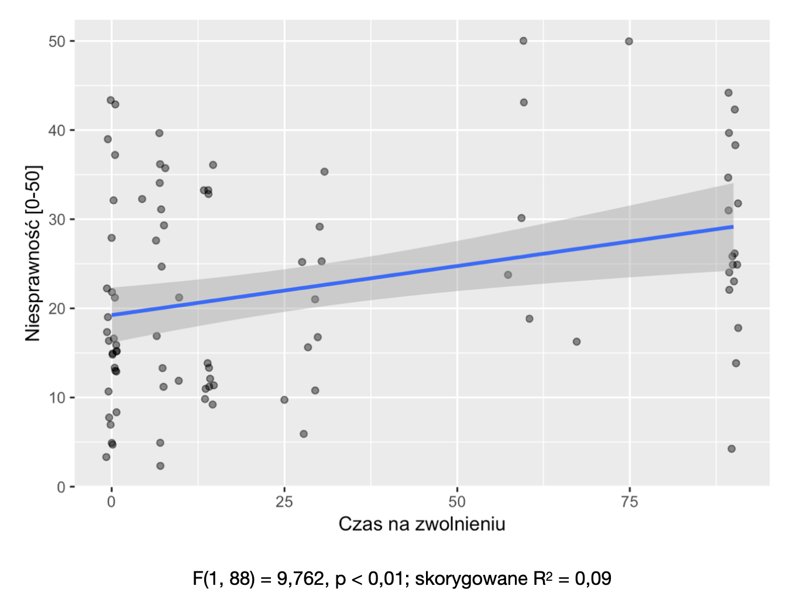
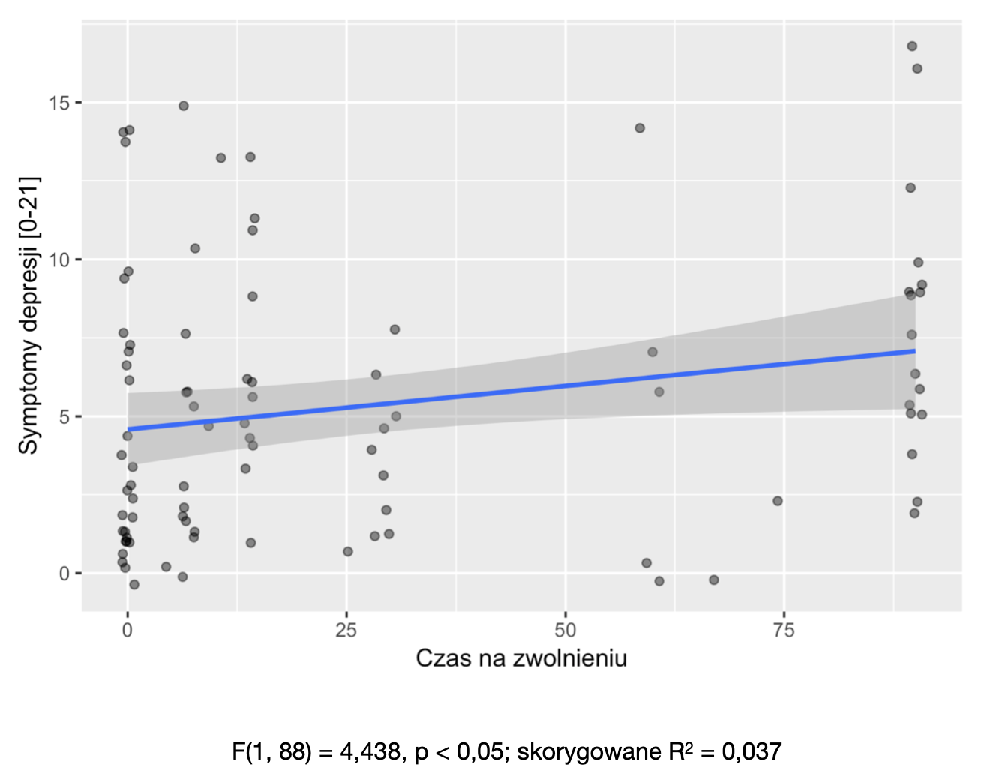

Pain, the brain and cognition
Low back pain
Krzysztof Basiński
Low back pain
- Pain in the lumbar area
- In most episodes of low back pain, an underlying cause is not identified
- Pain believed to be due to mechanical problems such as muscle or joint strain
Low back pain
- “Red flags” such as unexplained weight loss, fever, or significant problems with feeling or movement - bone cancer
- Some low back pain is caused by damaged intervertebral discs, and the straight leg raise test is useful to identify this cause
- In those with chronic pain, the pain processing system may malfunction, causing large amounts of pain in response to non-serious events
Low back pain
- Initial management with NSAIDs
- Normal activity should be continued as much as the pain allows
- Medications are recommended for the duration that they are helpful
- Low back pain often affects mood, which may be improved by counselling or antidepressants.
Low back pain
- Approximately 9–12% of people (632 million) have LBP at any given point in time
- Nearly 25% report having it at some point over any one-month period.
- About 40% of people have LBP at some point in their lives, with estimates as high as 80% among people in the developed world.
- LBP most often begins between 20 and 40 years of age.
- Men and women are equally affected.
Low back pain
- One of the leading causes of disability
- Highest YLD of all diseases in Global Burden of Disease
- Yearly costs - about 100 billion USD
Chronicity
- In most cases an acute episode ends after a couple of days
- In 10%-30% cases chronification
- Unknown mechanism (functional/structural brain changes, psychological factors)
My study
Aim
- To determine the psychosocial predictors of chronification three months after an acute low back pain episode in emergency department patients
- To determine the psychosocial predictors of the length of sick leave in these patients
Inclusion criteria
- Patients of UCK Emergency Department
- Non-specific LBP
- Pain-free for at least 3 months before
- 18-65 years
- Reads and writes in Polish
Exclusion criteria
- Know or suspected cause of pain (trauma, tumour, infection, rheumatoid arthritis)
- Pregnancy
- Other serious illness
Procedure
- Phase 1 - questionnaire at admission
- Phase 2 - structured interview via telephone 3 months after admission
Methods
- Brief Pain Inventory
- Oswestry Disability Questionnaire
- Hospital Anxiety and Depression Scale (HADS)
- Locus of control (MHLC)
Methods - phase 1
- Coping Strategies Questionnaire (CSQ)
- Self-rated health (5-point)
- Socio-demographical questionnaire
Methods - phase 2
- Structured interview
- Feeling pain
- Length of sick leave
Participants
- N = 110 (49 female)
- N = 97 (88.1%) in follow-up
- Age M = 39.34 (SD = 11.07)
- Mostly university (32.4%) or high school (42.34%) education
- Mostly living in urban areas (81.98%), had a steady job (78.38%), non-physical (43.24%)
- Average BMI = 27.06 (SD = 4.57)
Statistical analysis
- Welch’s t test - differences between means
- Pearson’s r - correlations
- Multivariate analyses - linear and logistic regression
Results
- 68 patients (70.1%) had pain after 3 months
- Average sick leave length - M = 28.26 (SD = 34.40)
Self-rated health

Disability

Anxiety

Depression

Pain interference

Results
- Lower self-rated health predicted pain chronification
- Longer sick leave was predicted by:
- lower self-rated health
- higher pain interference
- internal locus of control
- turning attention away from pain
- less frequent re-evaluating pain